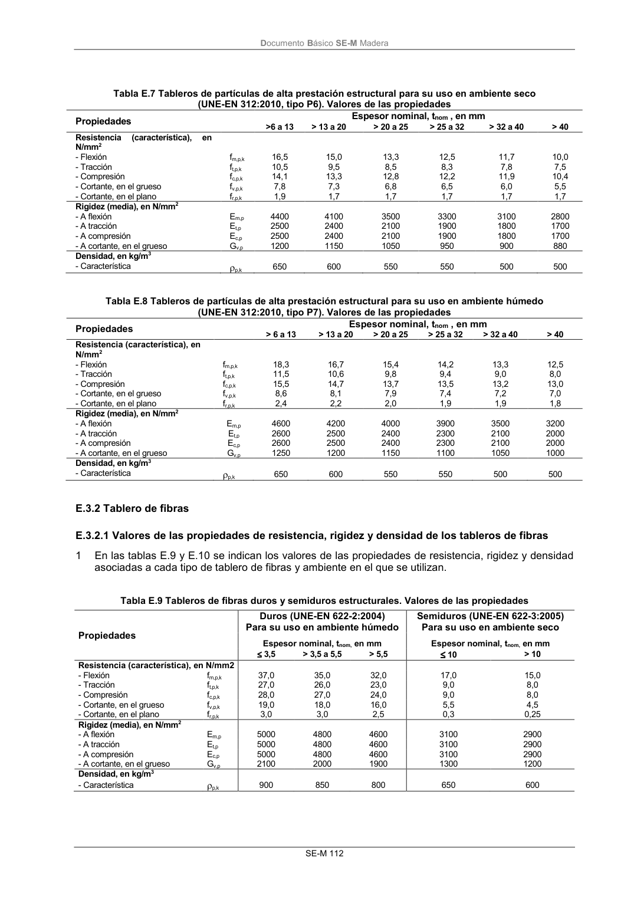

DB-SE-M · Fragmento de PDF p118 · versión 2019-12-20 · capa oficial
Formatos: JSON compacto · Markdown · PDF fuente
Ámbito del documento · texto del ámbito · documento y tablas
ID técnico a0197 · PDF pág. 118 · jerarquía no validada por persona · no es capítulo: sin_linea_de_encabezado · padre: raíz · literal original en el contenido: «(UNE-EN 312:2010, tipo P6). Valores de las propiedades Propiedades»
(UNE-EN 312:2010, tipo P6). Valores de las propiedades Propiedades Propiedades

PDF fuente redistribuible: copia fiel enlazada en esta página (SHA256 verificado).